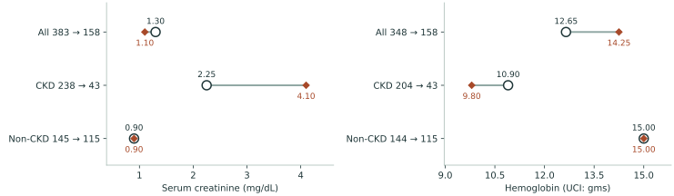
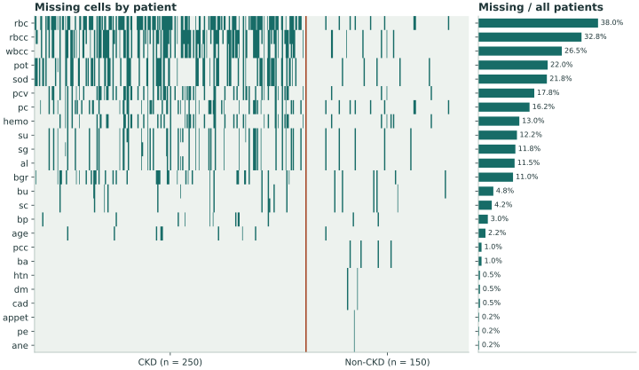
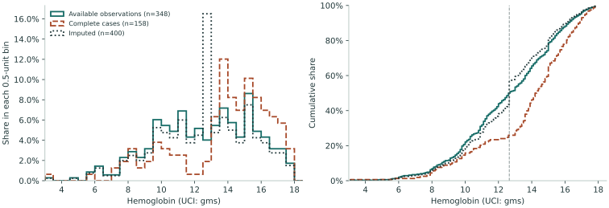
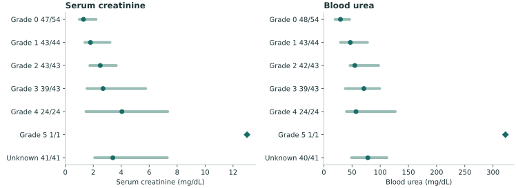
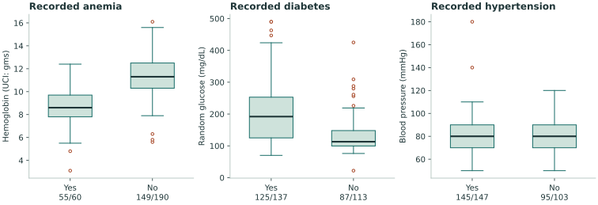
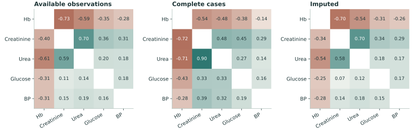
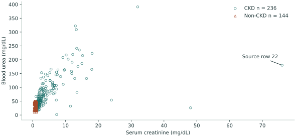
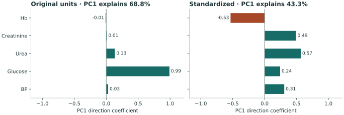

删去缺项后，为什么全体肌酐下降，CKD 组内却升高？
要求 24 项特征齐全后，400 人只留下 158 人。全体血清肌酐中位数从 1.30 降到 1.10 mg/dL，留下的慢性肾病（CKD）患者却从原组的 2.25 升到 4.10 mg/dL。两次比较换了分母。
○ 逐项实测 ◆ 完整病例 ｜ 组名旁为该指标的有效人数 · 点击图可放大

样本构成
完整病例筛选留下了 17.2% 的 CKD 患者
CKD 组保留 43/250 人，非 CKD 组保留 115/150 人（76.7%）。剔除的 242 人中有 207 人带有 CKD 标签。CKD 在样本中的占比由 62.5% 降至 27.2%。这既改变两组权重，也改变 CKD 组内留下的患者构成，因而总体中位数与组内中位数可以朝相反方向移动。

原始记录没有给出检查缺失的原因，也没有抽样权重。上述比例描述这批就诊记录；从中估计地区患病率或判断缺失机制，还需要抽样与就诊流程资料。
缺失值处理
填补把 52 条血红蛋白记录放在同一点

中位数保持 12.65，但中间 50% 的范围从 10.30–15.00 收窄至约 10.88–14.63。图中的台阶来自同一个替代值被重复使用。将这些填补值用于相关性或分层比较时，有效用于计算的人数会增加，实际完成检验的人数仍为 348。
肾脏指标 · CKD 组内
白蛋白等级较高的几组，肌酐中位数也较高

血尿素在 3 级和 4 级的中位数分别为 71 和 57 mg/dL，四分位区间重叠。另有 41 名 CKD 患者的白蛋白等级未记录，其中 41 人有肌酐实测值，中位数 3.40 mg/dL。把这些人归入 0 级会改变对照组的临床含义。
肌酐受滤过功能与肌肉量等因素影响，血尿素也受容量状态影响。UCI 的 al 只给 0–5 级，bu 定义为血尿素。定量尿白蛋白/肌酐比（uACR）和纵向复测均缺失，无法由此重建 KDIGO 分期。UCI 字典 · NIDDK 肌酐 · NHS 尿素 · KDIGO 定义与分类
合并症 · CKD 组内
贫血与糖尿病分层有差异，血压中位数相同

贫血与血红蛋白
有贫血记录者的血红蛋白为 8.60［7.80，9.70］（实测 55/60），无贫血记录者为 11.30［10.30，12.50］（149/190）。UCI 将单位记为 gms，未注明体积分母。肾病可通过促红细胞生成素减少等途径参与贫血；这里缺少铁代谢、炎症指标及失血史，无法据此给个体归因。NIDDK 肾病与贫血
糖尿病与随机血糖
糖尿病记录为“有”者的随机血糖为 192［125，253］mg/dL（125/137），记录为“无”者为 113［99.5，148］mg/dL（87/113）。用全队列中位数 121 填补后，两组中位数变为 172 与 121，差距由 79 缩至 51 mg/dL。症状、进餐时间和 HbA1c 均未记录，分析沿用既有病史标签。NIDDK 糖尿病检验
高血压与单次血压
有、无高血压记录者均为 80［70，90］mmHg（145/147 与 95/103）。这个字段只有一个数，没有标明收缩压、舒张压、用药或复测条件。相同的中位数不足以判断两组血压控制相同。非 CKD 组在这三项病史的“有”层均为 0 人，故无法在该组估计相同的有无差异。WHO 血压测量
变量关联 · 原始读数与敏感性
删行后线性相关增强，秩相关却减弱

Pearson 衡量线性共变，对远离主体的点较敏感；Spearman 按秩衡量单调关联。删行同时改变了患者构成和数值范围，不能把更高的 r 单独解读为更强的生理联系。

查看分组与单点敏感性计算
| 原始实测点对 | 有效人数 | Pearson r | Spearman ρ |
|---|---|---|---|
| 全体 | 380 | 0.586 | 0.703 |
| CKD | 236 | 0.543 | 0.840 |
| 非 CKD | 144 | −0.101 | −0.096 |
| 全体，暂不计行 22 | 379 | 0.674 | 0.701 |
行 22 的肌酐为 76.0 mg/dL、血尿素为 180 mg/dL。只在附加分析中暂不计这条记录，r 变动约 0.088，ρ 变动约 0.002。这个比较量化了全体实测结果对该点的敏感度；主分析保留原值，记录真伪需查原始化验单。
尺度 · 相同 400 人与 5 项指标
标准化改变了第一主成分的临床含义

两次拟合固定同一填补队列。前两轴合计解释比例由 97.6% 变为 64.3%。原尺度强调数值波动较大的血糖；标准化后同时看见较高肾脏指标与较低血红蛋白的共变。轴上位置描述样本内读数组合，不能给个体分期或预测结局。
对于 383 个为正的实测肌酐值，取自然对数后样本偏度从 7.51 降到 1.03。尺度报告可定位原始行，核对极端值如何影响图形。本项目的两次 PCA 均使用未取对数的五项指标。
研究口径与复核
结果可以追溯到哪一步
设计。 横断面、未调整的描述性分析。每位患者一行，原始诊断标签用于分组。逐项统计只用实测值，相关性取成对实测；完整病例要求 24 项齐全；简单填补基于全队列各数值列的中位数和分类列的众数。临床分层保留原始等级、病史及未记录状态。中括号给出四分位数，反映个体间分布。
临床边界。 年龄记录范围为 2–90 岁，数据缺少性别、纵向结果和定量 uACR。KDIGO 的慢性病程要求至少 3 个月；本次沿用 UCI 诊断标签。疾病进展、用药效应和人群风险均超出这批记录能回答的问题。KDIGO 2024 指南 · NIDDK 成人 eGFR 公式
数据归属。 Rubini、Soundarapandian、Eswaran，Chronic Kidney Disease（2015），UCI Machine Learning Repository，CC BY 4.0。分析基于本项目保留的 CSV；原始下载日未记录。数据 DOI · 原始 CSV · 许可证
数据指纹。 SHA-256 0eeea8d17f5ad8792d854999d6ddf1602ec4e116616f6ccdfdaef0ba8109e694。400 条记录清洗后未发现 25 个源字段完全相同的重复行。两组 PCA 各使用 400 人，五项临床比较均可在分层表核对分母。
项目内核对。 运行 bash scripts/pipeline.sh --plots 可重新计算。outputs/clinical_strata.csv 保留每格的实测与填补人数；outputs/renal_sensitivity.csv 保留分组及单点敏感性系数。交互核对患者请打开项目内的 队列报告 或 尺度与 PCA 报告。本文八幅图均可点击放大并保存。